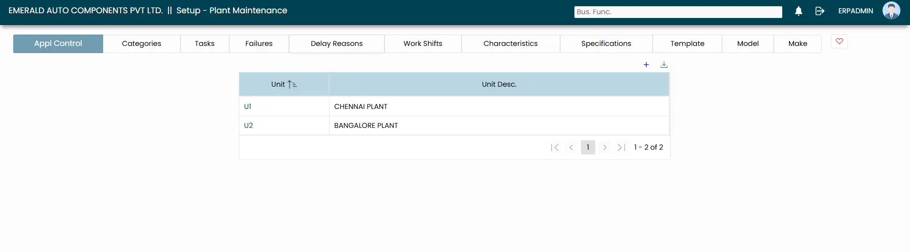
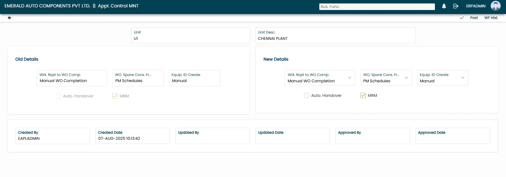
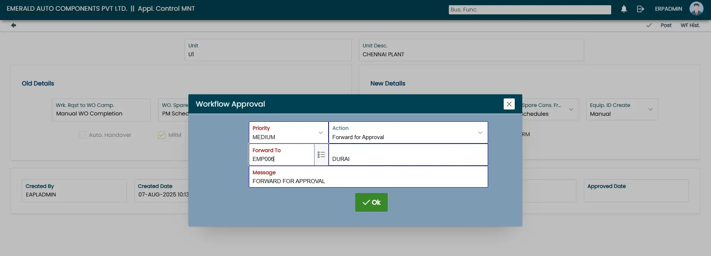

<div data-category="Plant Maintenance" data-title="Appl. Control" data-updated="January 23, 2026" data-contributors="RoadmapIT" data-breadcrumb="Home,Plant Maintenance,Appl. Control">
  <div class="page-content">
    <h5>Appl. Ctrl. (Plant Maintenance)</h5>
    <p>This screen is used to define the application control details of Plant Maintenance.</p>

    <h5>Navigation path:</h5>
    <p class="fs-6">Plant Maintenance \ Setup \ Setup-Plant Maintenance \ Application Control</p>

    
    <ul style="list-style-type: none; align-content: center">
      <li class="mouse-icon">Click <i class="bi bi-plus fs-4 mx-2 text-primary"></i> to add the Unit</li>
      <li class="mouse-icon">Enter the Unit.</li>
    </ul>

    
    <ul style="list-style-type: none; align-content: center">
      <li class="mouse-icon">Select the Work req. to work order completion as Manual or Automatic.</li>
      <li class="mouse-icon">Select the Equipment ID Creation whether it is Manual or auto.</li>
      <li class="mouse-icon">Select the type of Spare Consumption.</li>
      <li class="mouse-icon">Auto hand over can be checked or unchecked.</li>
      <li class="mouse-icon">WO Breakdown can be Checked or unchecked.</li>
      <li class="mouse-icon">Material Req. mandate can be checked or unchecked.</li>
      <li class="mouse-icon">Click <i class="bi bi-check-lg fs-4 mx-1 text-success"></i> to save</li>
      <li class="mouse-icon">By clicking Post button the document can be forwarded for approval</li>
    </ul>

    
  </div>
</div>
